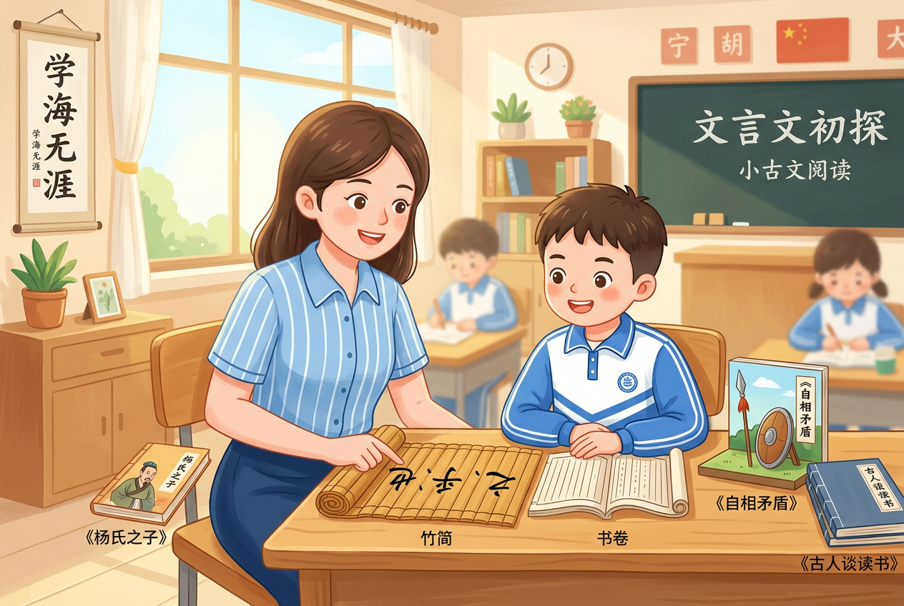

Starting from Yang Shi Zhi Zi, Self-Contradictory Spears and Shields, and sayings on reading, this lesson helps learners build a first practical strategy for reading short Classical Chinese sentences.

Students can identify 之, 乎, and 也 and understand that they are not decoration, but reading clues.
Students can use notes and context to explain the rough meaning of key sentences from the three texts.
Students can compare title-level 之, sentence-level 之, and sentence-final 乎 / 也.
When facing a new sentence, students can try a first reading before freezing in front of unfamiliar wording.
In early reading, students often do not fail because every word is difficult. They fail because they cannot see which small words are guiding the sentence structure.
| Word | First trial reading | What it usually helps with |
|---|---|---|
| 之 | “of / its” | Links nearby parts |
| 乎 | “?” / “does it” | Signals a question or rhetorical tone |
| 也 | final emphasis | Signals judgment or sentence closure |
Rule of thumb: First check the sentence end, then check the middle.
Students stop seeing “之乎者也” as scary symbols and start seeing them as reading tools.
In Yang Shi Zhi Zi, 之 can first be read like “of”, which helps students read the title smoothly.
In Self-Contradictory Spears and Shields, students compare several 之 and learn to judge by position.
In sayings on reading, learners read the sentence ending first, then inspect the inside clues, and finally restate it in modern Chinese.
Best entry point for title-level 之.
Best place to compare several 之 in one sentence.
Best place to transfer the method to a full sentence.
Pick one sentence from each text and name the first clue word you would use.
Retell “以子之矛陷子之盾，何如？” in modern Chinese and explain why 之 is first read as “of”.
Create your own sentence with 也 or explain why “眼口岂不到乎” sounds rhetorical.
Turn the reading strategy into a visual clue map for students.